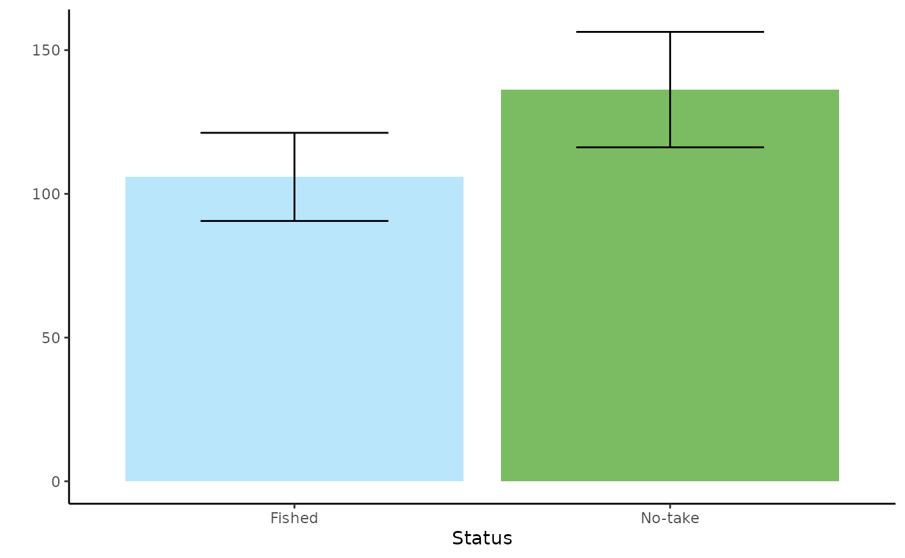
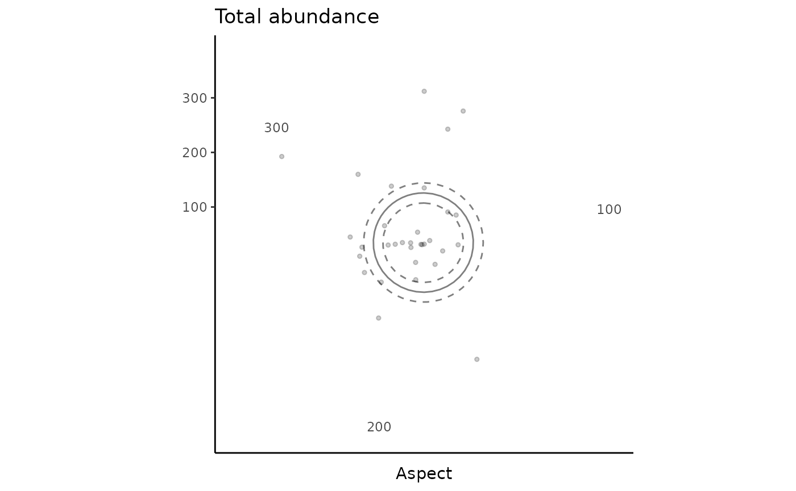

Generate Generalized Additive Model predictions of fish
Claude Spencer & Brooke Gibbons
2023-11-13
fish-predictions.RmdThis script takes the tidy datasets created in previous steps, along with the top models selection using FSSgam, and creates GAM regression plots. These plots are useful to correctly interpret the relationships between response and predictor variables, and allow for ecological investigation of top models.
R setup
Load libraries. All packages are available through CRAN, aside from ‘FSSgam’, which can be installed following the instructions provided in the GitHub repository https://github.com/beckyfisher/FSSgam.
# install.packages('remotes')
library('remotes')
options(timeout=9999999)
# remotes::install_github("GlobalArchiveManual/CheckEM")
library(CheckEM)
library(tidyverse)
library(mgcv)
library(devtools)
library(FSSgam)
library(here)
library(ggplot2)
library(ggnewscale)
library(viridis)
library(terra)
library(sf)
library(patchwork)Set the study name. Study names are used throughout to make for reproducible code that can be easily shifted between different campaigns and projects while still providing meaningful filenames.
name <- 'example-bruv-workflow'Set up data for prediction
Load the count data (MaxN). This data is crated in the previous workflow, ‘Format and visualise fish data’.
tidy.count <- readRDS(here::here(paste0('r-workflows/data/tidy/',
name,'_tidy-count.rds'))) %>%
dplyr::filter(!is.na(mbdepth)) %>% # If this filters out any then you need to go back and create your spatial layers
glimpse()## Rows: 64
## Columns: 18
## $ campaignid <chr> "2023-03_SwC_stereo-BRUVs", "2023-03_SwC_stereo-BRUVs", "…
## $ sample <chr> "10", "10", "12", "12", "14", "14", "15", "15", "16", "16…
## $ status <chr> "No-take", "No-take", "No-take", "No-take", "No-take", "N…
## $ response <chr> "total_abundance", "species_richness", "total_abundance",…
## $ number <dbl> 111, 13, 94, 15, 191, 9, 146, 16, 99, 14, 312, 18, 38, 13…
## $ longitude_dd <dbl> 114.8533, 114.8533, 114.8816, 114.8816, 114.8686, 114.868…
## $ latitude_dd <dbl> -34.08387, -34.08387, -34.13249, -34.13249, -34.07530, -3…
## $ depth <chr> "44.3", "44.3", "42.6", "42.6", "42.7", "42.7", "45.3", "…
## $ mbdepth <dbl> -42.77519, -42.77519, -42.02835, -42.02835, -41.07679, -4…
## $ slope <dbl> 0.005708777, 0.005708777, 0.013768068, 0.013768068, 0.078…
## $ aspect <dbl> 72.31942, 72.31942, 110.35012, 110.35012, 215.54254, 215.…
## $ tpi <dbl> 0.05208921, 0.05208921, 0.03892708, 0.03892708, 0.2611088…
## $ tri <dbl> 0.05208921, 0.05208921, 0.06246567, 0.06246567, 0.3096442…
## $ roughness <dbl> 0.11757660, 0.11757660, 0.30690765, 0.30690765, 0.7959022…
## $ detrended <dbl> -2.8542883, -2.8542883, -5.8822656, -5.8822656, -6.646017…
## $ mean_relief <dbl> 3.217391, 3.217391, 2.809524, 2.809524, 2.440000, 2.44000…
## $ sd_relief <dbl> 0.7952428, 0.7952428, 0.4023739, 0.4023739, 0.7118052, 0.…
## $ reef <dbl> 0.9690722, 0.9690722, 1.0000000, 1.0000000, 0.9420290, 0.…Load the fish length data. This data is created in the previous workflow, ‘Format & visualise fish data’.
tidy.length <- readRDS(here::here(paste0('r-workflows/data/tidy/',
name,'_tidy-length.rds'))) %>%
dplyr::filter(!is.na(mbdepth)) %>% # If this filters out any then you need to go back and check your spatial layers
glimpse()## Rows: 64
## Columns: 18
## $ campaignid <chr> "2023-03_SwC_stereo-BRUVs", "2023-03_SwC_stereo-BRUVs", "…
## $ sample <chr> "15", "17", "19", "23", "24", "26", "29", "3", "31", "32"…
## $ number <dbl> 1, 1, 8, 3, 2, 3, 4, 1, 4, 6, 1, 3, 1, 2, 4, 2, 6, 1, 13,…
## $ status <chr> "No-take", "No-take", "No-take", "No-take", "No-take", "N…
## $ response <chr> "greater than Lm", "greater than Lm", "greater than Lm", …
## $ longitude_dd <dbl> 114.8444, 114.8576, 114.7822, 114.9190, 114.8485, 114.928…
## $ latitude_dd <dbl> -34.08478, -34.09635, -34.12047, -34.12832, -34.11789, -3…
## $ depth <chr> "45.3", "43.3", "73.6", "41", "45.6", "36", "42.6", "46.7…
## $ mbdepth <dbl> -44.29804, -42.74676, -71.60112, -38.25594, -44.23959, -4…
## $ slope <dbl> 0.108975978, 0.008719478, 0.880997142, 0.444838455, 0.103…
## $ aspect <dbl> 264.03427, 30.76545, 262.35388, 294.10675, 257.20307, 40.…
## $ tpi <dbl> -0.19527912, 0.02505112, 1.04176044, 0.47694588, 0.042278…
## $ tri <dbl> 0.34487247, 0.03473282, 2.80258274, 1.83670998, 0.3347983…
## $ roughness <dbl> 0.91366196, 0.09923935, 9.01136017, 5.30128479, 1.2933082…
## $ detrended <dbl> -0.2281526, -3.1375041, 17.9911461, -8.6934719, 2.9724391…
## $ mean_relief <dbl> 2.518519, 3.333333, 2.583333, 3.555556, 3.360000, 4.00000…
## $ sd_relief <dbl> 0.8024180, 0.9128709, 0.5036102, 0.8555853, 0.4898979, 0.…
## $ reef <dbl> 0.8292683, 1.0000000, 0.9493671, 1.0000000, 1.0000000, 1.…Combine the count and length datasets to make for more simple code.
dat <- bind_rows(tidy.count, tidy.length)Filter the data to only include 1 response variable. The example included here models fish total abundance, and uses a dummy model not selected in FSSgam, in order to provide all the necessary code to produce fish predictions for all types of response variable. As all example data here are in a Commonwealth National Park Zone (status = “No-take”), we have overwritten the status column to include both “Fished” and “No-take”.
dat_total <- dat %>%
dplyr::filter(response %in% "total_abundance") %>%
dplyr::mutate(status = rep(c("Fished", "No-take"), times = 16))Manually set the top model selected in the previous workflow, ‘Select top model for fish using FSSgam’. Take care to make sure that it matches the model provided by FSSgam (eg. number of knots (k), smooth terms (bs), random effects). Remember this is an example model, hence the warning message if using these example data!
mod <- gam(number ~ s(detrended, k = 3, bs = 'cr') + status + s(aspect, k = 3, bs = 'cc'), family = tw(), data = dat_total)## Warning in smooth.construct.cc.smooth.spec(object, dk$data, dk$knots): basis dimension, k, increased to minimum possibleGenerate a dataframe with the values for detrended bathymetry while holding the other predictor variables at their mean.
testdata <- expand.grid(detrended = seq(min(dat$detrended), max(dat$detrended),length.out = 20),
aspect = mean(mod$model$aspect),
status = c("Fished", "No-take")) %>%
distinct() %>%
glimpse()## Rows: 40
## Columns: 3
## $ detrended <dbl> -12.9594803, -11.1420918, -9.3247032, -7.5073147, -5.6899261…
## $ aspect <dbl> 211.1597, 211.1597, 211.1597, 211.1597, 211.1597, 211.1597, …
## $ status <fct> Fished, Fished, Fished, Fished, Fished, Fished, Fished, Fish…Predict total abundance across the range of detrended bathymetry, using the ‘predict.gam’ function.
fits <- predict.gam(mod, newdata = testdata, type = 'response', se.fit = T)Combine the two dataframes to create mean and standard deviation values for the relationship between total abundance and detrended bathymetry.
predicts_total_detrended <- testdata %>%
data.frame(fits) %>%
group_by(detrended) %>% # Only change here
summarise(number = mean(fit), se.fit = mean(se.fit)) %>%
ungroup()Generate a dataframe with the values for status (factor variable) while holding the other predictor variables at their mean.
testdata <- expand.grid(status = c("Fished", "No-take"),
detrended = mean(mod$model$detrended),
aspect = mean(mod$model$aspect)) %>%
distinct() %>%
glimpse()## Rows: 2
## Columns: 3
## $ status <fct> Fished, No-take
## $ detrended <dbl> -0.0008681719, -0.0008681719
## $ aspect <dbl> 211.1597, 211.1597Predict total abundance for the two levels of the factor variable status, using the ‘predict.gam’ function.
fits <- predict.gam(mod, newdata = testdata, type = 'response', se.fit = T)Combine the two dataframes to create mean and standard deviation values for the relationship between total abundance and status.
predicts_total_status <- testdata %>%
data.frame(fits) %>%
group_by(status) %>% # Only change here
summarise(number = mean(fit), se.fit = mean(se.fit)) %>%
ungroup()Generate a dataframe with the values for aspect while holding the other predictor variables at their mean.
testdata <- expand.grid(aspect = seq(min(dat$aspect), max(dat$aspect),length.out = 20),
status = c("Fished", "No-take"),
detrended = mean(mod$model$detrended)) %>%
distinct() %>%
glimpse()## Rows: 40
## Columns: 3
## $ aspect <dbl> 30.76545, 47.30724, 63.84903, 80.39082, 96.93261, 113.47439,…
## $ status <fct> Fished, Fished, Fished, Fished, Fished, Fished, Fished, Fish…
## $ detrended <dbl> -0.0008681719, -0.0008681719, -0.0008681719, -0.0008681719, …Predict total abundance across the range of aspect, using the ‘predict.gam’ function.
fits <- predict.gam(mod, newdata = testdata, type = 'response', se.fit = T)Combine the two dataframes to create mean and standard deviation values for the relationship between total abundance and aspect.
predicts_total_aspect <- testdata %>%
data.frame(fits) %>%
group_by(aspect) %>% # Only change here
summarise(number = mean(fit), se.fit = mean(se.fit))%>%
ungroup()Create tidy plots to visualise the relationship between fish total abundance and detrended bathymetry.
gg_total_detrended <- ggplot() +
geom_point(data = dat_total, aes(x = detrended, y = number), alpha = 0.2, size = 1, show.legend = F) +
geom_line(data = predicts_total_detrended, aes(x = detrended, y = number), alpha = 0.5) +
geom_line(data = predicts_total_detrended, aes(x = detrended, y = number - se.fit), linetype = "dashed", alpha = 0.5) +
geom_line(data = predicts_total_detrended, aes(x = detrended, y = number + se.fit), linetype = "dashed", alpha = 0.5) +
theme_classic() +
labs(x = "Detrended bathymetry", y = "", title = "Total abundance") +
theme(plot.title = element_text(hjust = 0))
gg_total_detrended
Create tidy plots to visualise the relationship between fish total abundance and status. Note that as this plot is for a factor variable, the relationship is represented as bar plots.
gg_total_status <- ggplot() +
geom_bar(data = predicts_total_status, aes(x = status, y = number, fill = status), stat = "identity", show.legend = F) +
scale_fill_manual(values = c("No-take" = "#7bbc63",
"Fished" = "#b9e6fb")) +
geom_errorbar(data = predicts_total_status, aes(x = status, ymin = number - se.fit, ymax = number + se.fit), width = 0.5) +
theme_classic() +
labs(x = "Status", y = "")
gg_total_status
Create tidy plots to visualise the relationship between fish total abundance and aspect. Note that aspect is a circular variable (compasss bearing from 0 to 360 degrees), and thus the relationship is represented as a polar plot.
gg_total_aspect <- ggplot() +
geom_point(data = dat_total, aes(x = aspect, y = number), alpha = 0.2, size = 1, show.legend = F) +
geom_line(data = predicts_total_aspect, aes(x = aspect, y = number), alpha = 0.5) +
geom_line(data = predicts_total_aspect, aes(x = aspect, y = number - se.fit), linetype = "dashed", alpha = 0.5) +
geom_line(data = predicts_total_aspect, aes(x = aspect, y = number + se.fit), linetype = "dashed", alpha = 0.5) +
theme_classic() +
labs(x = "Aspect", y = "", title = "Total abundance") +
theme(plot.title = element_text(hjust = 0)) +
coord_polar()
gg_total_aspect